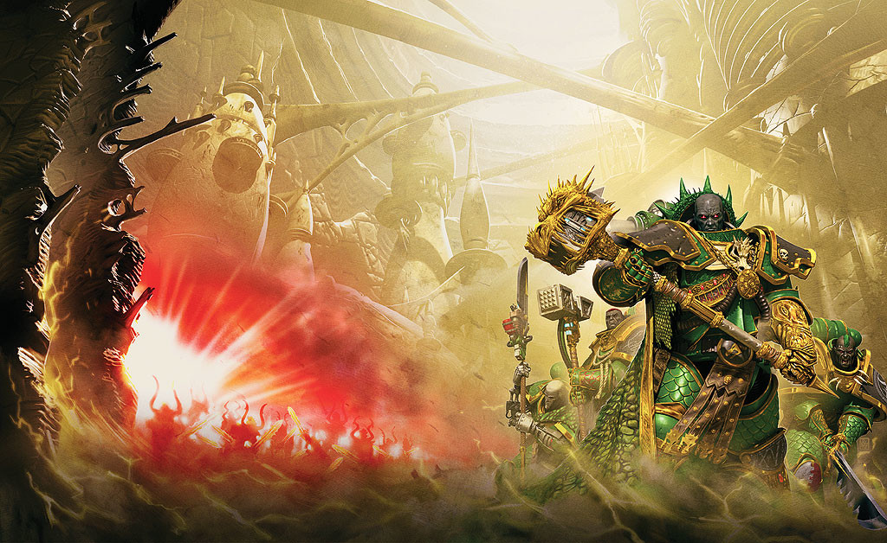

OLD EARTH

Author: Nick Kyme
Format: Novel
Vulkan sets out with a small group of trusted Salamanders on a journey towards Terra. As the Legions shattered at Isstvan V struggle to stay united, he must choose between their campaign of vengeance and a path of his own.
Introduction reviewed against Black Library’s description on 2026-09-27. The publisher page may contain spoilers.
Publication facts: publisher source, checked 2026-09-26.
Open this work in the interactive Archive to track reading progress and explore related works.
Take the three-question memory check for this work. The quiz contains story spoilers.